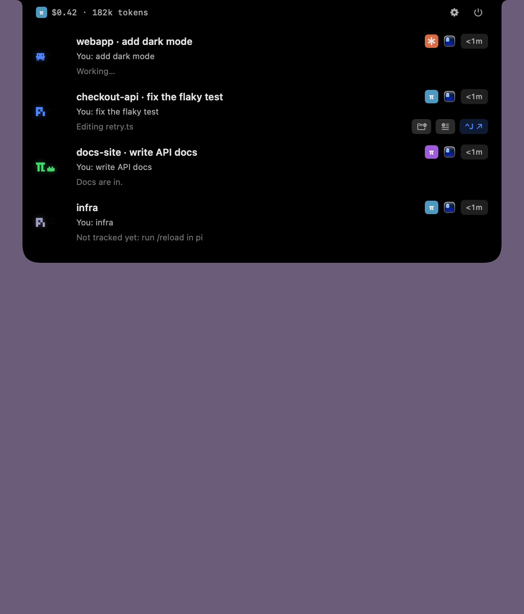

A coding agent is patient in the worst way. It will sit on Allow this command? for as long as it takes, without a sound, in a tab three windows down, while I admire how productive I'm being in another one.
The agents were never the slow part. I was, and specifically the part of me that had to notice. Checking tabs is polling, and people are bad at polling: we do it constantly and get nothing else done, or we forget and find the question after lunch.
So I gave the agents an interrupt line and put it on the one strip of screen nobody was using. The notch already costs every MacBook a rectangle of pixels. Topside moves in there: a black island with a dot per session. Blue is working, orange wants an answer, green is finished. Hover for the list.

It reads Claude Code, Codex CLI, pi and omp. When one of them wants to run a command or touch a file, the request opens on the island with the diff attached, and ^Y or ^N settles it. The tab stays wherever it was.

For the times you do want the tab, ^J or a click takes you there. Topside finds it the way you'd debug it: up the session's process tree until it hits a terminal, then the pane, in WezTerm, Orca, iTerm2, Terminal.app and tmux. Ghostty gets the window and an apology, since it has no way to pick a tab from outside yet.
How it works
The design is boring on purpose. Nothing runs beside the app and nothing leaves the machine. Each agent's hook starts the app's own binary in hook mode, which writes one JSON message to a Unix socket and exits. Sessions live in SQLite under ~/Library/Application Support/Topside.
Installing the hooks adds eight entries to ~/.claude/settings.json, leaves yours alone, and backs the file up first, because I've had a tool helpfully rewrite my config too. Quit Topside and the agents go back to asking in the terminal, as if it had never been there.
Install
curl -fsSL https://topside.ducban.com/install.sh | shmacOS 14 or later, Apple silicon. No sudo.
You're right to squint at curl | sh. The reason is dull: I have no Developer ID, so the app is ad-hoc signed, and a zip that arrives through a browser gets quarantined and refused by Gatekeeper. curl doesn't set that flag. The script is under 90 lines, so read it first. It checks the download against its SHA-256, verifies the signature, and swaps the new app in only once the copy is whole.
Then hover the island, click the gear, and switch your agents on under Integrations. To remove it, switch them off there, quit, and delete /Applications/Topside.app.
Ban
P.S. If the session's terminal is already in front when a turn ends, Topside says nothing. You were looking at it.
Keys
- ^Y
- allow the request on the open card
- ^N
- deny it
- ^A
- always allow (Claude Code only)
- ^J
- jump to the session's terminal
- esc
- close the card
In short
Watch
One dot per session. Blue works, orange waits on you, green is done. Rows show the prompt, the file being edited and the last reply.
Answer
Permission requests open as a card with the diff. ^Y allows, ^N denies. Questions get their options as buttons.
Jump
^J or a click brings the session's pane forward in WezTerm, Orca, iTerm2, Terminal.app and tmux.
Wiring
Hooks run the app's binary, which writes JSON to a Unix socket. SQLite on disk. No daemon, no account, no other socket.
Your config
Installing hooks keeps the ones you had and backs the file up first. With the app closed, the agents ask in the terminal as before.
Why a script
No Developer ID, so the app is ad-hoc signed. A browser download gets quarantined; curl's doesn't. The script checks a SHA-256 and the signature.
yay -S topside-arch, once it's out.